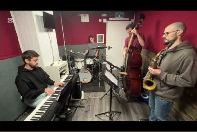
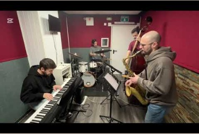
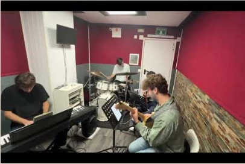
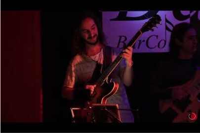
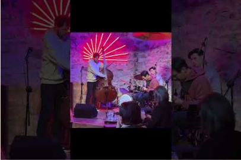
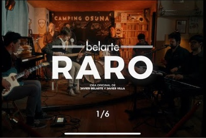
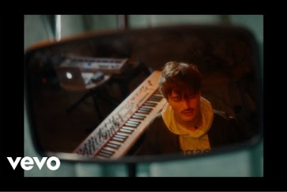
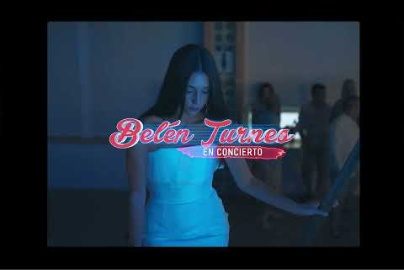
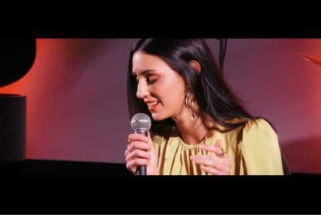
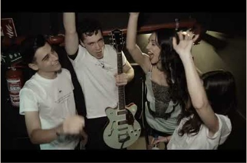

Up Downs
Going Back There
River Seas
Ciclo Talento Joven 2023: Jazz contemporáneo
Anders Boye Spanish Spring 2025 recap
Belarte - RARO (Alternate Version)
Belarte - Plan Maligno (Alternate Version)
Belén Turnes - en concierto (2022)
Belén Turnes - Pequeño Vals Vienés
Belén Turnes en concierto - Madrid (2023)